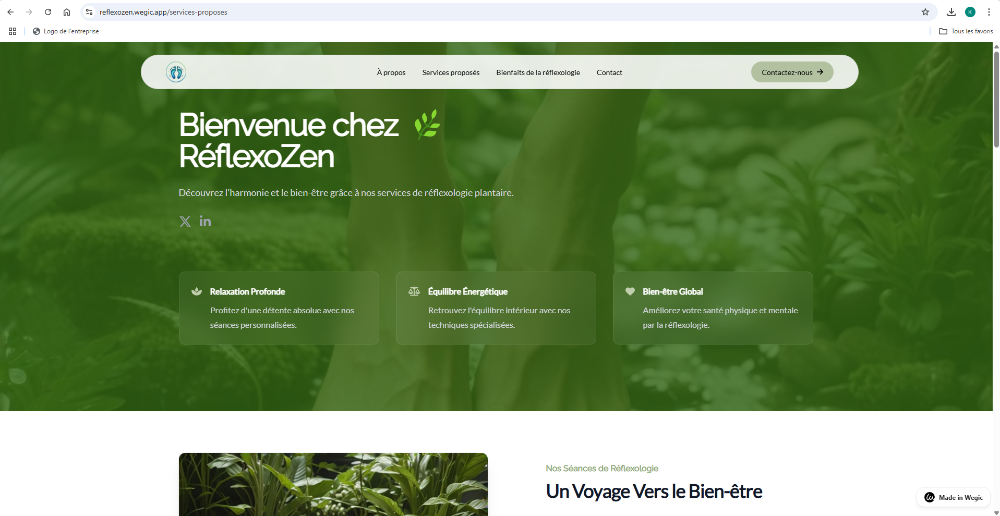

Création d’un site vitrine professionnel pour une praticienne en réflexologie plantaire.

Projet : Site pour une Réflexologue Plantaire
Création d’un site vitrine professionnel pour une praticienne en réflexologie plantaire.Présentation du projet
Ce projet personnel a été réalisé pour une réflexologue souhaitant développer sa visibilité en ligne et proposer à ses clients une vitrine claire et apaisante de ses prestations.
Objectifs
- Présenter l'activité de réflexologie plantaire de manière simple et professionnelle.
- Mettre en avant les bienfaits des soins, les tarifs et les témoignages clients.
- Permettre une prise de contact facile grâce à un formulaire ou des liens vers ses réseaux sociaux.
Fonctionnalités du site
- Page d’accueil avec présentation de la praticienne.
- Section sur les bienfaits de la réflexologie plantaire.
- Galerie d’images et ambiance du cabinet.
- Page de contact avec formulaire et carte Google Maps.
- Site responsive (adapté mobile/tablette).
Techniques utilisées
- Site développé via le CMS Wegic
- Design épuré, couleurs douces (tons verts et beiges) pour refléter le bien-être.
- Optimisation SEO de base pour un bon référencement local.
Travail réalisé
J’ai accompagné la réflexologue du début à la fin du projet : recueil des besoins, maquettes, développement, mise en ligne, et formation rapide pour la gestion de la page Contact. Le retour client a été très positif.
Lien du Site
https://reflexozen.wegic.app/